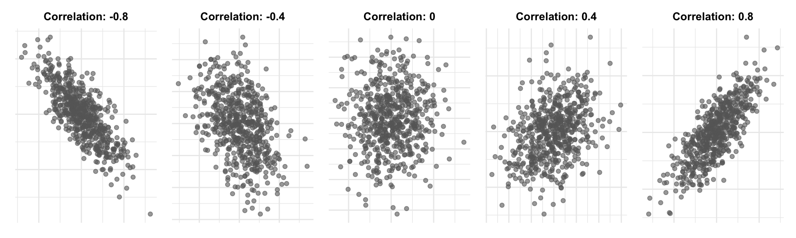
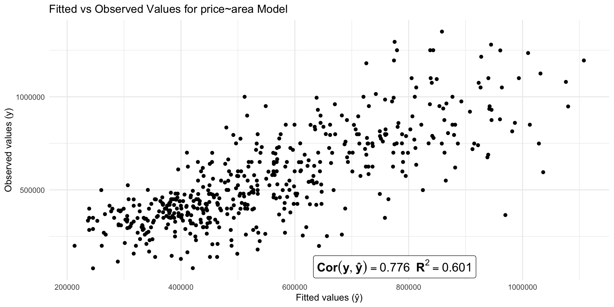

Call:
lm(formula = price ~ area, data = houses)
Residuals:
Min 1Q Median 3Q Max
-604840 -90641 2955 83298 519720
Coefficients:
Estimate Std. Error t value Pr(>|t|)
(Intercept) 4296.668 21017.955 0.2044 0.8381
area 279.139 10.101 27.6337 <0.0000000000000002 ***
---
Signif. codes: 0 '***' 0.001 '**' 0.01 '*' 0.05 '.' 0.1 ' ' 1
Residual standard error: 155630 on 506 degrees of freedom
Multiple R-squared: 0.60146, Adjusted R-squared: 0.60067
F-statistic: 763.62 on 1 and 506 DF, p-value: < 0.000000000000000222Error, Uncertainty and the Linear Model
Measuring prediction error
Data description:
Subset of single family home sales in 3 Austin zipcodes
Variables include location, size, number of bedrooms, number of bathrooms, and many more
Focus on relationship between price, number of bedrooms, and living area (square feet) as a first example
Predicting price from area

Residuals and fitted values
- The fitted value (“y hat”) for observation \(i\) is the predicted value from the regression line: \[ \widehat{y}_i = \widehat{\beta_0} + \widehat{\beta_1} \times \text{area}_i \]
- The residual is the corresponding prediction error: \[e_i = y_i - \widehat{y}_i = \text{observed price} - \text{predicted price}\]
- When a linear model fits well,
- The fitted line tells us about the part of price predictable from area
- The residuals tell us about the part of price not predictable from area
Visualizing residuals and fitted values

What does a residual tell us?

What is a “typical” residual?
- The residual tells us the prediction error for a given point
- The standard deviation of the residuals tells us the typical size of these prediction errors (in absolute value)
- It’s a measure of how variable our prediction errors are
- Low variability: our predictions are usually close to actual values
- High variability: our predictions are often far off from actual values
- In R, this is called the Residual Standard Error (RSE)
From line 16: RSE = $155,630
\(R^2\) (R-squared)
\(R^2\) is a measure of the strength of the linear relationship between the \(Y\) and all \(X\)’s in the linear regression
- \(R^2\) ranges from 0 to 1
- 0 = no linear realtaionship
- 1 = perfect linear relationship
- Related to correlation
\(Cor(X,Y)\) measures linear association between two variables
- Between -1 and 1
- Sign indicates direction of linear relationship
- Magnitude indicates strength of linear relationship (0=none, \(\pm 1\)=perfect)
Correlation
Defining \(R^2\) (R-squared)
\(R^2\) has two equivalent definitions:
- The squared correlation between observed and fitted values from the regression model
- The proportion of variance in the outcome \(Y\) “explained” by the regression model
Finding \(R^2\)
Call:
lm(formula = price ~ area, data = houses)
Residuals:
Min 1Q Median 3Q Max
-604840 -90641 2955 83298 519720
Coefficients:
Estimate Std. Error t value Pr(>|t|)
(Intercept) 4296.668 21017.955 0.2044 0.8381
area 279.139 10.101 27.6337 <0.0000000000000002 ***
---
Signif. codes: 0 '***' 0.001 '**' 0.01 '*' 0.05 '.' 0.1 ' ' 1
Residual standard error: 155630 on 506 degrees of freedom
Multiple R-squared: 0.60146, Adjusted R-squared: 0.60067
F-statistic: 763.62 on 1 and 506 DF, p-value: < 0.000000000000000222Line 17 (Multiple R-squared): \(R^2 = 0.601\) (we’ll cover adjusted \(R^2\) later)
\(R^2 = Cor(Y, Ŷ)^2\)
\(R^2\) as generalized correlation
- \(R^2\) tells us how closely the predicted values track actual values
- In a simple linear model, it’s the same as \(Cor(X,Y)^2\)
- So you can think of \(R^2\) as a generalization of correlation to multiple X’s
\(R^2\) as generalized correlation
It inherits the same limitations as correlation:
- Low \(R^2\) does not imply
- No “meaningful” linear relationship
- No strong nonlinear relationship
\(R^2\) as generalized correlation
- High \(R^2\) does not imply
- A causal relationship
- A true linear relationship
- Prediction errors are small enough to be useful
- The model will predict will for future data
\(R^2\) as proportion of variance “explained”
- If \(R^2\) is high then our predictions track the observed values closely
- \(R^2\) measures how much unpredictability (variance) in the outcome “goes away” when we ues X to predict
\(R^2\) as proportion of variance “explained”
\[ R^2 = \frac{\overbrace{\text{variance of Y} - \text{variance of residuals}}^{\text{variance ``explained''}}}{\text{variance of Y}} \]
- Common phrasing: “\(R^2\) is the proportion of variance in \(Y\) explained by the model”
\(R^2\) as proportion of variance “explained”
- The variance of \(Y\) is also the variance of the residuals under a simple regression model where we force \(\hat\beta_1=0\)
- So we can think about \(R^2\) as the reduction in variance (average size) of our residuals when using X to predict Y compared to not using X at all
- If we force \(\hat\beta_1=0\), all of our predictions will be \(\bar y\) (the average \(Y\) value)

\(R^2\) as proportion of variance “explained”
\[ R^2 = \frac{246,274^2 - 155,630^2}{246,274^2}\approx 0.601 \]
- We say \(X\) “explained” 60.1% (\(R^2=0.601\)) of the total variability in \(Y\)
- Remember: this is just a way of quantifying how closely the line tracks actual values
- You can predict something without being able to explain why it happens!
Multiple or Adjusted \(R^2\)?
- The only difference is how residual variance is estimated
- In practice, the difference is usually small
- If they’re very different then neither is very reliable
- On a HW/Quiz/Exam you can use either
- Later we’ll see how to get more accurate measures of prediction error
\(R^2\) or RSE?
- \(R^2\) measures the strength of the linear relationship between Y and the X’s
- Since it’s a relative measure, we don’t know how big our prediction errors are likely to be
- \(RSE\) measures the typical size of our prediction errors using X to predict Y
- Since it’s an absolute measure, we don’t know how strong the linear relationship is
Both can be useful, but in practice RSE is usually more relevant.
\(R^2\) or RSE?
Predicting the price of a house from its area:
- R^2 = 0.601
- RSE = $155,630
Pretty strong linear relationship, but typical prediction errors are still very large!
\(R^2\) doesn’t add up
- We can use \(R^2\) to measure “independent” contributions of multiple \(X\) variables
- Compare \(R^2\) from models with different sets of \(X\) variables
- Area: \(R^2\) = 0.601
- Beds: \(R^2\) = 0.137
- Area and Beds \(R^2\) = 0.615 \(\neq 0.601+0.137\)
- Adding beds once you know area -> only about 1.4% more variance explained
Why?

- Area already contains a lot of information about beds
- The new information we get from introducing beds is not that useful for predicting prices
- Compare this to starting with beds and adding area – we get a big boost in \(R^2\)
Prediction isn’t everything
- Notice that the area and area+beds model have very similar \(R^2\) values
- The RSE values are also similar
- Area only: 155627
- Area + Beds: 153047
- Both models predict prices about equally well (or badly)
- But they tell very different stories about what an additional sqft is worth!
Incorporating uncertainty
Accounting for error and uncertainty
- So far we’ve focused on estimated coefficients and predictions
- We know our predictions will be wrong – how wrong are the likely to be?
- We know our coefficients don’t match the true population values – how close are they?
The simple linear regression model
We need a model for our data to answer these questions. Our model has four components:
- Linearity
- Independence of prediction errors
- Normality of prediction errors
- Equal variance of prediction errors
Linearity
The relationship between \(Y\) and each \(X\) is linear:
\(Y = \beta_0 + \beta_1 X_{1} + \beta_2 X_{2} + ... + \beta_p X_{p} + \epsilon\)
- \(\beta_0, \beta_1, ..., \beta_p\) are the true/population regression coefficients
- \(\epsilon\) is the true error if we predict \(Y\) using the true regression coefficients
Our other assumptions are about those true error terms \(\epsilon\)…
Independence
- Each observation has an independent true error term
- If my neighbor’s house sells for more than expected, that doesn’t tell me anything about whether my house will sell for more or less than expected
- If the last house sells for less than expected, that doesn’t tell us anything about whether the next house will sell for more or less than expected
Normality
The true error terms \(\epsilon\) are normally distributed and centered at zero
- The average error over many predictions is zero
- Over-prediction and under-prediction are equally likely
- Most errors are small, but large errors are possible
Equal Variance
- The true error terms \(\epsilon\) all have the same standard deviation \(\sigma\)
- The size of the true errors does not depend on the values of the X’s (or anything else)
- For example, errors are about the same size (on average) for small and large houses
The linear model
Putting the LINE assumptions together, we have the full linear regression model:
\[ Y = \beta_0 + \beta_1 X_{1} + \beta_2 X_{2} + ... + \beta_p X_{p} + \epsilon \]
\[ \epsilon\sim N(0, \sigma^2)\text{ independently for each observation} \]
For an individual observation with predictors \(X\), we have:
\[ (Y\mid X) \sim N(\beta_0 + \beta_1 X_{1} + \beta_2 X_{2} + ... + \beta_p X_{p}, \sigma^2) \]
Visualizing the linear model

Estimates vs True Values
- Our \(\hat \beta_0, \hat \beta_1, ..., \hat \beta_p\) are just estimates of the true \(\beta_0, \beta_1, ..., \beta_p\)
- The residuals estimate the true prediction errors
- The RSE (standard deviation of residuals) is an estimate of the true \(\sigma\) (error standard deviation)
Accounting for uncertainty in estimates
- If we want to know how uncertain our estimates are, we need to quantify their variability.
- We can do this using the sampling distribution of our estimates (how much they change over repeated samples)
- More specifically, we can compute confidence intervals
Confidence intervals
- A confidence interval gives a range of plausible values for a population parameter (e.g., a regression coefficient)
- These are possible values of the true coefficients that are consistent with our observed data at a given level of confidence (e.g., 95%)
- If our LINE assumptions hold, these are easy to get:
Returning to course evaluations
Call:
lm(formula = eval ~ beauty, data = profs)
Residuals:
Min 1Q Median 3Q Max
-1.8002 -0.3630 0.0725 0.4021 1.1037
Coefficients:
Estimate Std. Error t value Pr(>|t|)
(Intercept) 3.9983 0.0253 157.73 < 0.0000000000000002 ***
beauty 0.1330 0.0322 4.13 0.000042 ***
---
Signif. codes: 0 '***' 0.001 '**' 0.01 '*' 0.05 '.' 0.1 ' ' 1
Residual standard error: 0.545 on 461 degrees of freedom
Multiple R-squared: 0.0357, Adjusted R-squared: 0.0336
F-statistic: 17.1 on 1 and 461 DF, p-value: 0.0000425Is there evidence for a linear relationship?
- The range of plausible values for the slope \(\beta_1\) is (0.07, 0.20)
- No linear relationship would mean \(\beta_1=0\)
- All the plausible values are positive, so we have statistically significant evidence of a positive linear relationship between beauty and evaluations
How strong is the linear relationship?

- \(\text{Cor}(\text{beauty, eval}) = 0.19\)
- \(R^2\) = 0.036 – only 3.6% of the variance in eval is explained by beauty
- But we have strong statistical evidence that this (weak) linear relationship holds among the population of all instructors
- i.e., it isn’t just a fluke in this particular sample
How strong is the linear relationship?

- Remember: \(R^2\) doesn’t tell us directly how confident we are that a linear relationship exists
- In this case we have strong evidence of a weak linear relationship
- This is because many factors unrelated to beauty affect eval scores
Accounting for uncertainty in predictions
If I’m selling a house I’d like to know:
- What’s the most likely sale price (best prediction)?
- What’s a range of likely sale prices (prediction interval)?
Prediciton intervals

Our model: Actual prices for houses of a given size will:
- Have normal distributions
- Centered at the predicted value (location on the line)
- With standard deviation \(\sigma\)
95% of the time, actual prices fall within \(\pm 2\sigma\) of the predicted price (if we knew the true line and \(\sigma\))
Prediction intervals
Under our LINE assumptions, we can get prediction intervals for new observations that account for both:
- Uncertainty in our estimated regression line
- The inherent variability in actual outcomes around that line
fit lwr upr
1 562576 256519 86863295% prediction interval: ($256,518, $868,632)
Prediction intervals
fit lwr upr
1 562576 256519 868632- There’s a 95% chance that a new house will sell for a price in this range
- 95% of all future houses with 2000 sq ft will sell for between $256,518 and $868,632